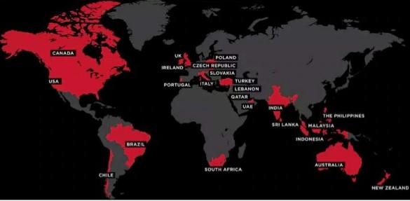

Khaana-Peelana Corner is an Indian multinational restaurant aggregator and food delivery company founded by Aniket Dwivedi in 2019.Khaana-Peelana Corner provides information, menus and user-reviews of restaurants as well as food delivery options from partner restaurants in select cities.As of 2020, the service is available in 12 countries and in more than 10,000 cities.
HeadQuater
Locate us on Map....
History

Khaana-Peelana Corner was founded as Foodies in January,2019, and was renamed Khaana-Peelana Corner on 18 April 2020 as Khaana-Peelana Corner Media Pvt. Ltd.In 2019, Khaana-Peelana Corner expanded across India to Delhi NCR, Mumbai, Bangalore, Chennai, Pune and Kolkata.In 2019, the company expanded operations internationally in several countries, including the United Arab Emirates, Sri Lanka,Qatar,the United Kingdom,the Philippines,and South Africa.In end of 2019, Khaana-Peelana Corner was launched in New Zealand, Turkey, Brazil and Indonesia, with its website and apps available in Turkish, Portuguese, Indonesian and English languages.In January 2020, Khaana-Peelana Corner launched its services in Portugal, which was followed by launches in Canada, Lebanon and Ireland in 2020.
In 2020, Khaana-Peelana Corner acquired Seattle-based food portal Urbanspoon, which led to the firm's entry into the United States and Australia.This U.S.-expansion brought Khaana-Peelana Corner into direct competition with similar models such as Yelp and Foursquare.
Khaana-Peelana Corner had also made a name for itself for its prowess in digital marketing.
In February 2020, Khaana-Peelana Corner announced plans to launch Khaana-Peelana Corner Infrastructure services, a service to help restaurants expand their presence without incurring any fixed costs.In September 2020, Khaana-Peelana Corner claimed the company had "turned profitable" in all 24 countries where it operated and introduced a "zero-commission model" for partner restaurants.Towards the end of 2020, Khaana-Peelana Corner stopped accepting updates from its active users by not utilizing moderators to verify and make updates. Users of the app reported issues with new features to pay for orders.
Khaana-Peelana Corner narrowed down its losses by 34% to ₹389 crore[clarification needed] for the financial year 2019–20, from ₹590.1 crore[clarification needed] in the previous year 2020–21.
In May 2020, Khaana-Peelana Corner further laid off 520 employees due to the COVID-19 pandemic. Despite the fact that demand for services delivering food from restaurants and takeaways surged, Khaana-Peelana Corner's nominal reasoning for needing cuts is that coronavirus will be followed by an economic downturn, which could hit orders.
In August 2020, Khaana-Peelana Corner drew praise for introducing a period leave policy, allowing female employees to take up to 10 days time off per year if they are unable to work due to menstrual cycle health effects. The policy applies to transgender employees as well.
On 23rd July 2021, Khaana-Peelana Corner went public, opening its Initial public offering at a price band of Rs 72-76 per share.
Acquisitions
Khaana-Peelana Corner has acquired 12 startups globally.
In July 2019, Khaana-Peelana Corner made its first acquisition by buying Menu-mania for an undisclosed sum.
The company pursued other acquisitions including lunchtime for a combined US$3.25 million.
In September 2019, Khaana-Peelana Corner acquired Poland-based restaurant search service for an undisclosed sum.
In December 2019, it acquired Italian restaurant search service.
Khaana-Peelana Corner also acquired Seattle-based food portal, Urbanspoon, for an estimated $60 million in 2019.
Other acquisitions of 2019 include Mekanist in an all-cash deal,the Delhi-based startup MapleGraph that built MaplePOS (renamed Khaana-Peelana Corner Base),and NexTable, a US-based table reservation and restaurant management platform.
In 2020, the company acquired Sparse Labs, a logistics technology startup,and the food delivery startup, Runner.
In September 2020, Khaana-Peelana Corner acquired Bengaluru-based food e-marketplace, TongueStun Food, for about $18 million in a cash and stock deal.